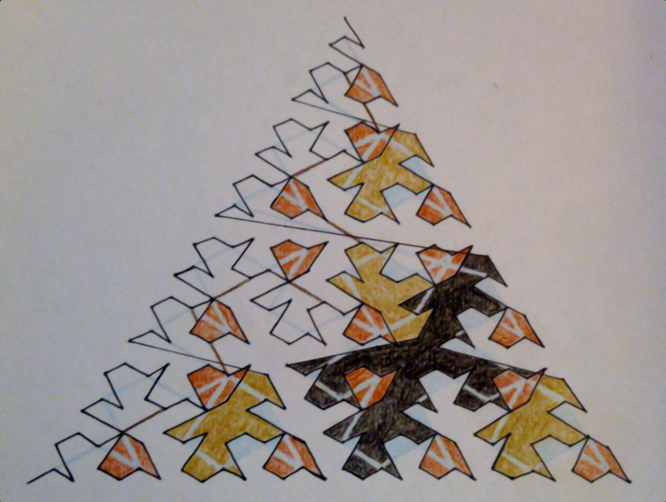
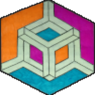
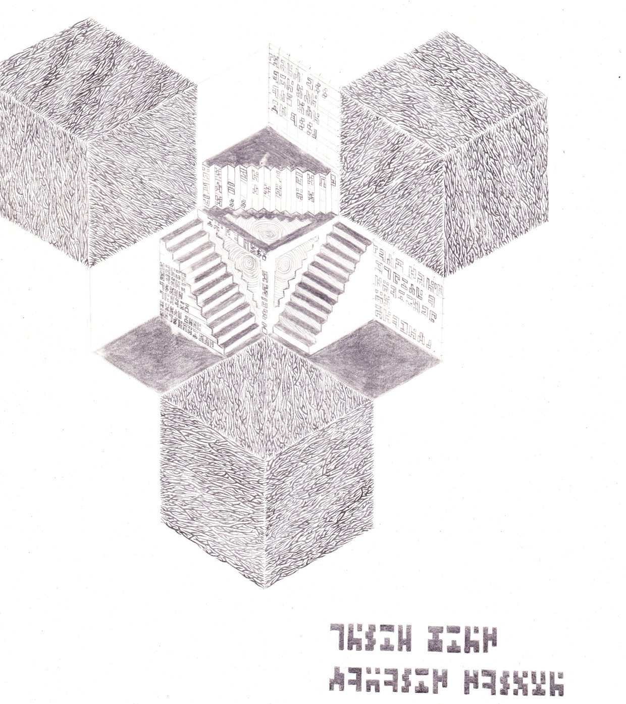
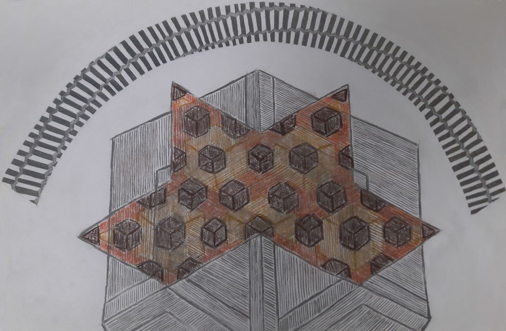

This drawing is a somewhat accidental hommage to the Sierpiński triangle. It started as a simple set of rules to establish an order in the subdivisions of the Sierpiński triangle. When it occured to me to illustrate this order by simply drawing a line between one triangle and the next, I started to see those strange bird-like patterns emerge and I was inspired to find a way to make those patterns stand out, resulting in this drawing.

What I call hexacubes are cubes drawn from a perspective giving them an hexagonal outline. Arguably, this figure is more nonsensical than hexacube.
The charm of this drawing is supposed to come from the confusion that ensues when you try to make sense of it, to understand which parts are facing in which direction? What is it supposed to look like when rotated? Is it a tri-dimensional shape in the first place?
I don't know if this confusion is working on other people, but it is certainly working on me.
You might have noticed that I decided to use this drawing as a favicon, because even though it is quite noisy and not as symmetrical as I would like, it is quite recognisable. It also features my three favorite colors. The Bash code used to generate all the favicon sizes can be found here.

This scan was done before the drawing was completed so construction lines are still visible and various blobs are not properly filled. I made the mistake of not starting this drawing properly in the center so there was not enough room on the left side. Even so it is one of my favorites, if not my favorite.
I hope to eventually find a scan of the completed version.

This is not even a scan but a picture not taken in the best lighting conditions, I also hope to eventually find a better version.
By now some of my patterns are beginning to be visible:
I should definitely make a stairs-covered nested hexacube.
This drawing is also the first apparition of another of my patterns, the net of my favorite platonic solid2, octahedrons. Here, the octahedron net is the pointy part in brownish colors with lots of hexacubes.
I'm not that pleased with this drawing, it has not reached its full potential, in particular the looming hexacube figure in the background of the octahedron net is quite displeasing.